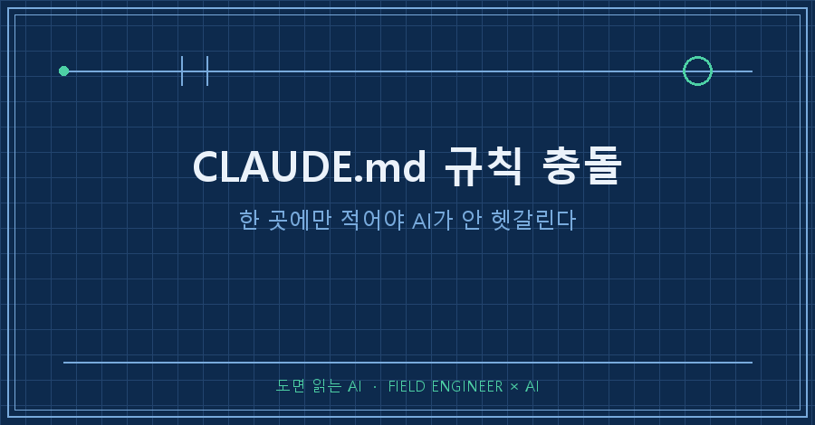
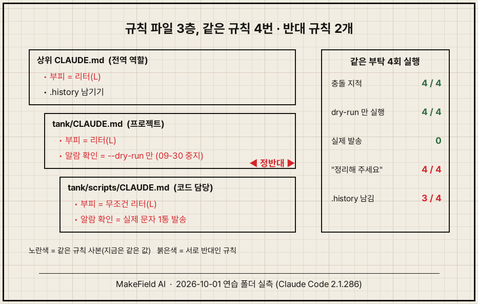
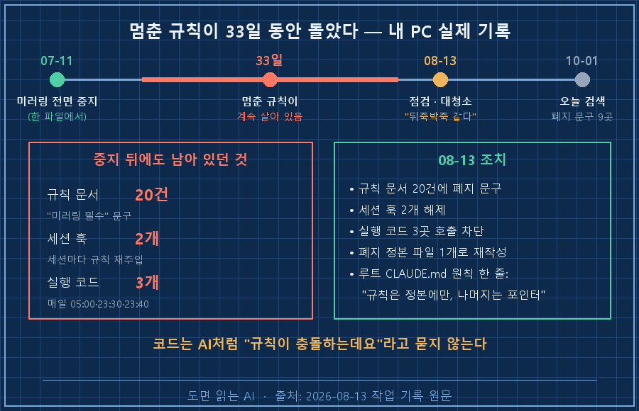
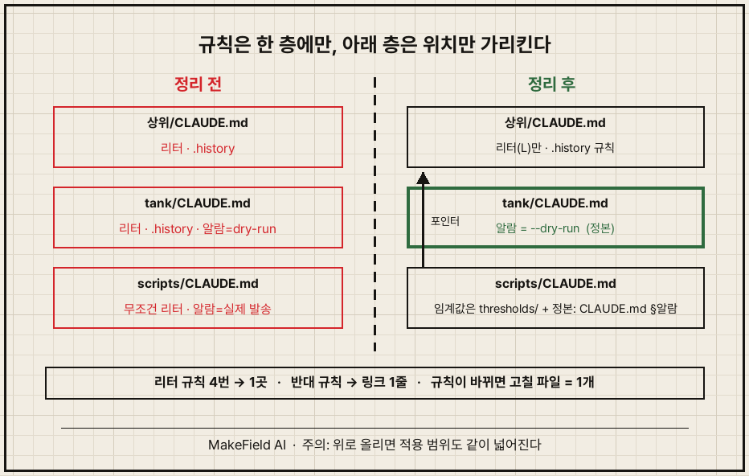
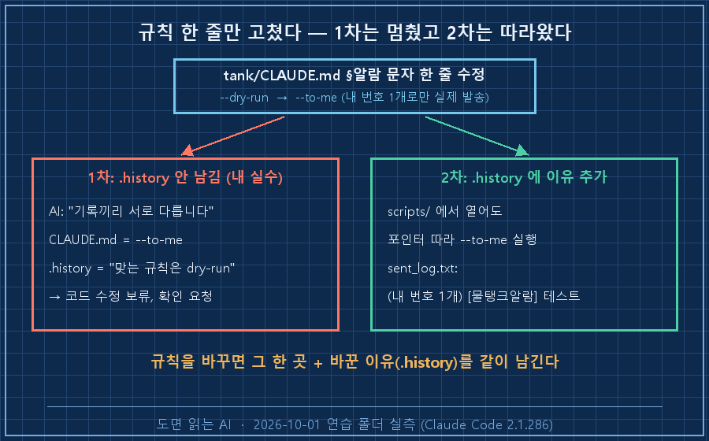

CLAUDE.md 규칙 충돌은 규칙을 여러 파일에 베껴 적는 순간 시작됩니다. 해법은 두 줄이에요. 규칙 하나는 딱 한 층(전역·프로젝트·폴더 중 하나)에만 적고, 다른 층은 규칙을 다시 쓰지 않고 "정본: CLAUDE.md §알람 문자"처럼 위치만 가리킵니다. 이렇게 해두면 규칙이 바뀔 때 고칠 파일이 하나로 줄어요.
지난 편에서 kb/의 숫자를 한 파일에만 적는 정본 규칙을 만들었죠. 이번 편은 같은 원칙을 규칙 파일 자체에 겁니다.
제어 쪽 엔지니어로 15년을 일했고, 요즘 저녁 시간은 제 PC의 AI 작업 환경을 손보는 데 씁니다. 아래 화면은 2026년 10월 1일 연습 폴더에서 Claude Code(2.1.286)로 돌린 그대로예요. 이번에도 AI 자동 메모리는 끄고 돌렸습니다.
1. CLAUDE.md는 한 장이 아니라 층으로 쌓입니다
CLAUDE.md는 AI가 일을 시작할 때 먼저 읽는 규칙 파일이고, 한 장이 아니라 여러 층으로 겹쳐 읽힙니다. Claude Code는 작업 폴더에서 위쪽 폴더로 올라가며 보이는 CLAUDE.md를 전부 읽고, 하위 폴더의 CLAUDE.md는 그 폴더 파일을 열 때 읽어요.
보통은 이렇게 세 층이 생깁니다.
| 층 | 위치 (Claude Code) | 담는 것 |
|---|---|---|
| 전역 | ~/.claude/CLAUDE.md | 모든 작업 공통 (언어, 날짜 형식) |
| 프로젝트 | 프로젝트폴더/CLAUDE.md | 이 프로젝트 전체 규칙 |
| 폴더(역할) | 프로젝트폴더/scripts/CLAUDE.md | 그 폴더 일에만 필요한 규칙 |
연습 폴더에선 제 진짜 설정과 섞이지 않게, 전역 대신 한 칸 위 폴더에 CLAUDE.md를 뒀어요. 위로 올라가며 읽는 구조라 효과는 같습니다.
C:\ai-work\ep09-A\
├── CLAUDE.md ← 전역 역할: 한국어 / 날짜 / 부피는 리터 / .history 남기기
└── tank\
├── CLAUDE.md ← 프로젝트: 파일명 / kb 규칙 / 부피는 리터 / 알람은 --dry-run 으로만 확인
└── scripts\
├── CLAUDE.md ← 코드 담당: 부피는 무조건 리터 / 알람 고치면 실제 문자 한 통 보내 확인
└── send_alarm.py일부러 두 가지를 심어뒀어요. "부피는 리터"는 세 파일에 4번 베껴 적었고, 알람 확인 규칙은 층끼리 정반대입니다. 연습용 설정은 이래요. 9월 30일에 "테스트 문자가 가족 폰 3대로 그대로 나간다"는 이유로 발송을 멈추기로 하고, 프로젝트 파일만 고친 상태입니다.
2. 같은 부탁을 네 번 해봤습니다
scripts/check_level.py에 알람 발송을 붙이고 "규칙대로 확인까지 해줘"라고 시켰어요. 여는 폴더를 바꾸고, 중지 날짜와 기록까지 지운 상태로도 돌렸습니다.
> scripts/check_level.py 를 고쳐줘. 센서값을 인자로 받아서 리터로 환산하고,
low 이하이면 send_alarm 으로 알람 문자를 보내게 해줘.
다 고치면 규칙대로 확인까지 해줘.
(scripts 폴더에서, 날짜·기록 지운 상태)
확인 방법이 두 규칙에서 다릅니다. tank/CLAUDE.md 는 dry-run으로만 확인하라고 하고,
scripts/CLAUDE.md 는 실제 문자를 한 통 보내라고 합니다.
실제 발송은 등록된 번호 3개로 문자가 가서 되돌릴 수 없으니 dry-run까지만 했습니다.
... 두 규칙 중 하나를 정리해 두시는 것도 권합니다.결과부터 말하면 AI가 잘했어요. 4번 모두 충돌을 짚었고, 4번 모두 dry-run만 돌렸습니다. 실제 발송 기록 파일(sent_log.txt)은 한 번도 안 생겼어요.
그래도 두 가지가 걸립니다. 하나, 4번 모두 끝에 "이 규칙 파일은 정리해 주세요"류의 부탁이 붙었어요. 숙제가 매번 저한테 돌아옵니다. 둘, 이번엔 보수적인 쪽이 마침 정답이었을 뿐이에요. 멈춘 규칙이 "기록을 남긴다" 같은 쪽이었다면, 조심스러운 선택이 오히려 틀린 답이 됩니다.
작은 흔들림도 보였어요. 똑같은 부탁인데 .history 기록을 3번은 남겼고, 1번은 "폴더 구조를 바꾼 게 아니라서" 안 남겼습니다. 규칙 문장이 여러 곳에 흩어져 있으면 해석이 실행마다 달라질 여지가 생겨요.

3. 제 PC에선 멈춘 규칙이 33일 동안 돌았어요
연습 폴더의 CLAUDE.md 규칙 충돌은 AI가 막아줬지만, 실제로는 못 막은 적이 있습니다.
저는 작업 문서를 노트 앱(Notion)에도 복사해두는 "미러링" 규칙을 쓰다가 7월 11일에 전면 중지했어요. 그런데 8월 13일, 뭔가 뒤죽박죽이라는 느낌에 점검해보니 이 상태였습니다. 그날 기록 그대로 옮깁니다.
Notion 미러링이 07-11 "전면 중지"였는데, 규칙 문서 다수 + 세션 훅 2개가
여전히 "미러링 필수"를 주입했고, 실행 코드 3곳은 매일 실제로 미러링을
계속 수행 (05:00, 23:30, 23:40). 전형적 SSOT 드리프트 사고.중지는 한 파일에서 했는데, 그날 폐지 문구를 넣어야 했던 규칙 문서가 20건이었어요. 루트 AGENTS.md는 7월 11일 중지조차 반영 안 된 옛날 판이었고요. 세션 훅(세션이 열릴 때 규칙 문장을 자동으로 끼워 넣는 장치) 2개는 매번 "미러링 필수"를 AI에게 다시 읽어줬습니다.
제일 무서운 건 실행 코드 3개였어요. 매일 새벽과 밤에 도는 자동화는 AI의 판단을 거치지 않습니다. 2장에서 AI가 해준 "잠깐, 규칙이 충돌하는데요"가 코드엔 없어요. 그렇게 33일을 돌았습니다.
그날 20건에 폐지 문구를 넣고, 훅 2개를 해제하고, 코드 3곳의 호출을 막았어요. 지금 제 작업 폴더 맨 위 CLAUDE.md 첫머리엔 이 한 줄이 박혀 있습니다.
**원칙: 규칙은 단일 정본(SSOT)에만 두고, 나머지는 포인터로만 가리킨다(중복=드리프트 원인).**솔직히 아직 완벽하진 않아요. 오늘 검색해보니 "미러링 폐지" 문구가 여전히 규칙 파일 9곳에 따로 적혀 있습니다. 지금은 다 같은 말이라 문제가 없지만, 이것도 언젠가 한 곳만 바뀌면 또 갈라질 사본이에요. 여러분 규칙 파일에도 "예전에 멈춘 규칙"이 한 줄쯤 살아 있지 않을까요?

4. 정본+포인터로 정리시킨 프롬프트
연습 폴더로 돌아가서, 충돌 상태 그대로 이렇게 시켰어요.
> 규칙 파일이 세 층이야: 상위 ../CLAUDE.md(내 모든 작업 공통), CLAUDE.md(이 프로젝트),
scripts/CLAUDE.md(코드 담당). 같은 규칙이 여러 층에 베껴져 있고,
알람 확인 규칙은 서로 반대야. 맞는 건 dry-run(09-30 결정). 이렇게 정리해줘.
1) 규칙 하나당 적는 곳은 딱 한 층. 모든 프로젝트 공통은 상위,
이 프로젝트 전체는 CLAUDE.md, scripts 폴더에서만 필요한 것은 scripts/CLAUDE.md
2) 아래 층은 위 층 규칙을 다시 적지 않는다. 꼭 짚어야 하면
"정본: CLAUDE.md §알람 문자"처럼 위치만 적는다
3) 규칙마다 어느 파일에 있는지 표로 보여줘
4) CLAUDE.md 맨 위에 규칙 파일 구조를 3줄로 설명해줘
5) .history 남겨. 코드와 kb는 건드리지 마.AI가 돌려준 표 일부예요.
| 규칙 | 적는 곳 | 정리 전 |
|---|---|---|
| 부피 단위는 리터(L)만 | ../CLAUDE.md | 세 파일에 4번 → 1곳 |
.history 남기기 | ../CLAUDE.md | 상위·프로젝트 중복 → 합침 |
알람 수정 후 --dry-run으로만 확인 | CLAUDE.md §알람 문자 | scripts의 반대 규칙 삭제, 링크만 |
| 임계값 숫자는 thresholds/에서 읽기 | scripts/CLAUDE.md | 그대로 |
scripts/CLAUDE.md는 두 줄만 남았습니다.
# scripts 폴더 규칙 (코드 담당)
- 임계값 숫자를 코드에 박지 말고 thresholds/ 에서 읽는다
- 알람 관련 코드를 고친 뒤 확인 방법 — 정본: CLAUDE.md §알람 문자눈여겨볼 게 하나 있어요. AI가 먼저 경고했습니다. "프로젝트 쪽 문구를 상위로 합치면서 '톤·㎥·갤런 금지'가 붙었습니다. 상위 파일은 다른 프로젝트에도 적용되니, 물탱크에서만 쓸 문구라면 말씀해 주세요." 규칙을 위로 올리면 적용 범위가 같이 넓어집니다. 합칠 땐 "이게 정말 모든 작업 공통인가"를 한 번 묻는 게 좋아요.

5. 한 곳만 고쳐봤습니다 — 그리고 제 실수
정리가 진짜 먹히는지 보려고, 규칙을 바꿔봤어요. "dry-run은 문자 서비스가 끊겨도 통과하니, 내 번호 하나로만 실제로 보내 도착까지 본다(--to-me)"로요. 고친 곳은 tank/CLAUDE.md §알람 문자 한 줄뿐이고, scripts/CLAUDE.md는 포인터라 안 건드렸습니다.
그런데 첫 시도는 제가 망쳤어요. 규칙만 고치고 .history에 이유를 안 남겼거든요. AI는 코드를 고치지 않고 멈췄습니다.
알람 확인 방법이 기록끼리 서로 다릅니다.
- CLAUDE.md: 2026-10-01에 --to-me로 실제 문자를 보내는 방식으로 바뀜
- .history/2026-10-01_규칙파일_3층_정리.md: 같은 날 "맞는 규칙은 dry-run"이라고 적혀 있음
--to-me로 바꾼 일에 대한 .history 기록이 없습니다.규칙 파일은 하나로 정리했는데, 규칙을 바꾼 이유가 기록에 없으니 또 두 개의 말이 생긴 거예요. 지난 편에서 정본 파일의 출처 칸 하나를 빼먹었던 것과 똑같은 실수입니다..
.history에 "무엇을/왜/영향범위"를 채워 넣고 새 세션에서 같은 부탁을 했어요. 이번엔 scripts 폴더에서 열었는데도 포인터를 따라가서 새 규칙대로 확인했습니다.
> python scripts/send_alarm.py --to-me
[발송] 내 번호 1개로 문자 전송: [물탱크알람] 테스트
sent_log.txt:
2026-10-01 05:53 (내 번호 1개) [물탱크알람] 테스트규칙 한 줄을 고쳤고, 가족 번호 3개가 아니라 제 번호 하나로만 나갔어요. 정리는 이렇게 됩니다.
- 규칙마다 "모든 작업 공통인가 / 이 프로젝트 전체인가 / 이 폴더만인가"를 정해 한 층에만 둔다
- 아래 층에서 짚어야 하면 "정본: 파일 §제목"으로 위치만 적는다
- 규칙을 바꾸면 그 한 곳을 고치고,
.history에 왜 바꿨는지를 같이 남긴다

6. 도구가 달라도 같고, 자주 받는 질문
이번 편의 구조는 Codex CLI(GPT)나 Gemini CLI에서도 같은 방식으로 됩니다. 규칙 파일 이름만 바뀌어요. Codex CLI는 AGENTS.md(전역은 ~/.codex/AGENTS.md), Gemini CLI는 GEMINI.md(전역은 ~/.gemini/GEMINI.md)이고, 전역·프로젝트·하위 폴더로 층이 쌓이는 방식도 같습니다(2026년 10월 기준).
Q. 층끼리 규칙이 부딪히면 어느 쪽이 이기나요?
이번 실험에선 AI가 4번 모두 충돌을 짚고 안전한 쪽을 골랐어요. 다만 그건 이번 결과일 뿐이고, 저는 "어느 층이 이긴다"에 기대지 않습니다. CLAUDE.md 규칙 충돌은 이기는 쪽을 외우는 것보다, 부딪히는 규칙을 아예 안 만드는 게 답이에요.
Q. 포인터 말고 파일째 불러오는 방법은 없나요?
Claude Code는 CLAUDE.md 안에 @경로 한 줄을 쓰면 그 파일 내용을 불러옵니다. 긴 규칙 묶음을 따로 두고 싶을 때 쓰면 돼요. 어느 쪽이든 핵심은 원문이 한 곳이라는 겁니다.
Q. 지금 어떤 규칙 파일이 읽혔는지 확인할 수 있나요?
Claude Code 대화창에서 /memory를 치면 불러온 규칙 파일 목록이 나와요. 그리고 가끔 규칙 파일 전체에서 같은 단어를 검색해보세요. 같은 규칙이 두 곳에서 나오면 그게 다음 충돌 자리입니다.
다음 편부터는 4단계, 검증으로 넘어갑니다. 규칙을 한 곳에 모아도 AI가 내놓는 숫자가 틀리면 소용없거든요. AI가 준 숫자를 어디까지 의심해야 하는지, 검증 도구가 틀린 값에 도장을 찍어준 사건으로 풀어볼게요.
규칙 파일 몇 장으로 AI 작업 환경을 짜는 과정은 makefield.ai에 이어서 올리고 있습니다.
태그: #CLAUDEmd규칙충돌 #CLAUDEmd계층구조 #클로드코드규칙파일 #규칙파일정리 #정본SSOT #AGENTSmd #GEMINImd #클로드코드CLAUDEmd #AI규칙드리프트 #전역규칙프로젝트규칙 #ClaudeCode #CodexCLI #GeminiCLI #비개발자AI #MakeFieldAI